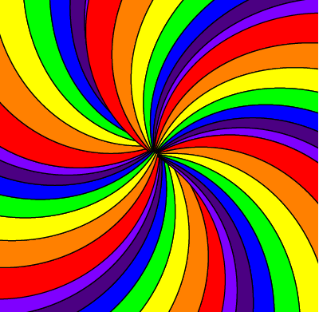

Keyboard:
wasd or arrows move
e or space rotate
Keyboard:
wasd or arrows move
e or space rotate
Testing 8th Aug 2021 Level codes work now!
A 2D top down indy game about escaping an Asylum.
Releasing new levels as they are built.
So far: in both Alpha and Beta: Opening story, with first bit of movement; then just in Alpha: starts of story branching
Coming in next few weeks: more branches of plot
You can play this entire game using either: touch screens, mouse and keyboard, just keyboard or just a mouse.
tap or click on the buttons shown on screen.
If a screen is just story, tapping/clicking on the story does the same as the Next button
Action sections: w,a,s & d or arrow keys for movement, e or space to rotate.
Story sections:
standard accessibility keys for your web browser can be used to cycle through and select options
Typically:
Tab cycles through options
Shift + Tab cycles through options in reverse
Space checks or unchecks checkboxes
Enter activates selected buttons.
The game automatically sets keyboard focus to the "Next" button
or the first text box / option if the screen has choices.
Buttons will be disabled if you've not unlocked that save point. If you have a level code from playing on another browser or device (or maybe you want to cheat) you can activate the code in the box at http://solarrageasylumbeta.protostart.net/
More buttons will be added to this screen as the game is developed.
Epilepsy warning - vivid contrasting spinning colours(we've taken care to keep it slow, but cannot guarantee that is sufficient for all)
small devices: we recommend landscape for the best experience
You awaken in a haze, or is it still a dream?
The haze begins to clear.
Out from the haze, a swirl of colours emerges
Other than yourself, and the hoverbed you're laying on there is only a great magnificent vortex of light descending from above, flowing around and under you
You feel calm. Very calm.
Maybe too calm, given you can barely see, and what you can see is not your normal reality.
Maybe we should start trying to figure some things out.
First off what's your name?
Ahh nice to meet you, I'm Derek, your new internal monologue.
Oh, and don't worry, you're not crazy.
All the best people have internal monologues that give themselves names
like this.
Ah the rainbow has stopped. Lets try to move around, feeling for walls
Oh, theres a wall here, I still can't see it but it seems padded
This wall feels padded too
Padded. Just one wall left to check
It's official, we're in a padded room. I wonder why?
the taster Beta currently ends at this point, but here in our test area, you can see stuff that is being worked on (expect bugs) OR click here to go back to the titles. LEVEL CODE: "padded"
A short time passes, and you've moved back to somewhere near the middle of the room
Ok so ... we're in a padded room, that we don't remember going into, on a white hoverbed...
the room feels empty, I'm pretty sure nobody else is in here, or any other large objects
and ... we're probably hallucinating - certainly something majorly wrong with our vision. Are we crazy? Where we crazy? I don't think I'm normally crazy.
Someone must suspect that we're crazy, or have seen us be crazy, at least recently. We wouldn't have put us, I mean I wouldn't have put myself into a padded room...
would I??
Could they have been correct? Maybe something came over me. Some kind of ... psionic ... warp field??
I hear footsteps, outside the room.
I think someone might be about to enter
Sounds like a keypad, beep beep beep beep beep and on the final beep the door opened with a satisfying woosh. Be calm now
Hello there. Can you hear me okay?
Ah good. Can you see me or is your vision messed up?
Ah yes, temporary vision loss can occur unfortunately. It'll return shortly.
Yes, I'm here next to you
Hmm, no immediate response. Pulse seems good. Brain activity is a little unusual, but nothing we wouldn't expect from their condition and the meds they're on. I'll check the others and try again in a minute
Oh dear, looks like this one isn't responding well to the meds, better try something else. Guard, would you restrain their left arm so that I can get a dose of this in.